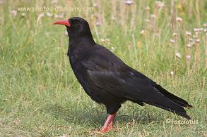
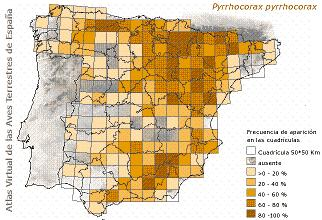

|
| Chova
piquirroja |
Pyrrhocorax
pyrrhocorax |
| Ave
sedentaria |
Orden:
Passeriformes, familia: Corvidae |
 Identificación
Identificación |
| Adulto |
Foto |
Ave
parecida a la grajilla, aunque de mayor tamaño
(puede llegar hasta los 40 cm. de Longitud), con
patas y pico rojo, éste fino, largo y curvado.
Plumaje totalmente negro, con reflejos metálicos
e iridiscentes. Alas anchas y con primarias externas
muy separadas. Ave característica en la
montaña que se agrupa en bandos numerosos. |
 |
| Dimorfismo
sexual |
No
existen diferencias significativas entre machos
y hembras en estas especie. |
| Descripción
del juvenil |
Los
ejemplares juveniles tienen un pico mas corto
que los adultos, y el color de éste es
anaranjado o amarillento confundiendose con la
chova piquigualda. (En nuestra zona no se da esta
confusión, porque no habita la piquigualda) |
|
|
Distribución |
En
la Península la subespecie erythrorbamphus
ocupa principalmente los sistemas montañosos
de la mitad norte y también el Sistema
Central y el Bético. Poblaciones costeras
en Galicia, Asturias, Cantabria y Levante. Pequeñas
poblaciones, e incluso parejas, aisladas en muchas
provincias. No cría en Baleares, Ceuta
ni Melilla, y en Canarias cria sólo en
La Palma (subespecie barbarus). . Sus
mayores abundancias se registran en roquedos,
eriales y brezales, y la media de sus densidades
máximas citadas en esos tres hábitats
es de 0,39 aves/10 ha. Su población esta
en regresión en Salamanca. |
 |
| Sierra
de Béjar |
Su
reproducción es segura en nuestra zona.
La sierra de Béjar alberga una de las cuatro
colonias de chova piquirroja de la provincia,
localizándose las otras tres en la sierra
de Francia, sierra de Gata y Arribes del Duero.
En la sierra de Béjar se la observa en
grupos de hasta 20 aves en cotas elevadas de la
cara sur, mucho más abrupta que la norte
y por tanto con enclaves de nidificación
más adecuados. En la cara norte existen
algunos grupos de 3-4 parejas. La población
parece ser escasa, cifrándose en un mínimo
de 40 aves. |
|
|
Habitat |
Nidifica
en cuevas, grietas y cavidades de zonas de montaña,
en construcciones y edificios históricos (valle
del Ebro o Segovia), o en cortados fluviales en el SE
de Madrid, y en ramblas en la Hoya de Guadix |
|
Biología |
Se
alimenta en pastos de montaña, vegetación
baja mediterránea y cultivos de secano con barbechos
y vegetación natural, donde explota invertebrados
hipogeos. Territorial en el entorno del nido o asociadas
a otras parejas segun la disponibilidad de lugares de
nidificación. Básicamente sedentaria pero
en montaña se desplaza en invierno a cotas bajas
y en verano asciende a mejores zonas de alimentación.
Los jovenes pueden realizar cortos movimientos dispersivos. |
Estado de la población y amenazas |
La
subespecie peninsular se considera Casi Amenazada (NT)
pero barbarus, En
Peligro (EN). Las que crían en construcciones
estan condenadas a desaparecer por la progresiva ruina
de las ya abandonadas, y por la medidas para evitar
su cría en edificios históricos. La perdida
de hábitat de alimentación por intensificación
agrícola y desaparición de la ganadería
extensiva, son amenazas importantes y causa de declive.
Los pequeños núcleos o parejas corren
permanentemente riesgo de desaparición por fragmentación.
Es perseguida, quizá involuntariamene, por cazadores
debido a los injustificados descastes de Grajilla o
Corneja. El turismo incontrolado, la escalada o espeleología,
pueden ser amenazas en zonas de cría y dormideros.
Los contaminantes de origen agrícola pueden afectar
a su supervivencia y reproducción. Noa hay planes
específicos de conservación. La gestión
agropecuaria debería incentivar los usos y ciclos
tradicionales extensivos, evitar la concetranción
parcelaria y promover la ganadería tradicional
extensiva. Deben protegerse sus principales dormideros
y son necesarios acuerdos para compatibilizar su nidificación
con la conservación del patrimonio histórico-artístico,
además del censo exhaustivo de sus poblaciones
más importantes y desconocidas (Pirineos, Sistema
Ibérico, Sistema Central, cordillera Cantábrica
y Sistema Bético). |
|
Enlaces |
|
|
|